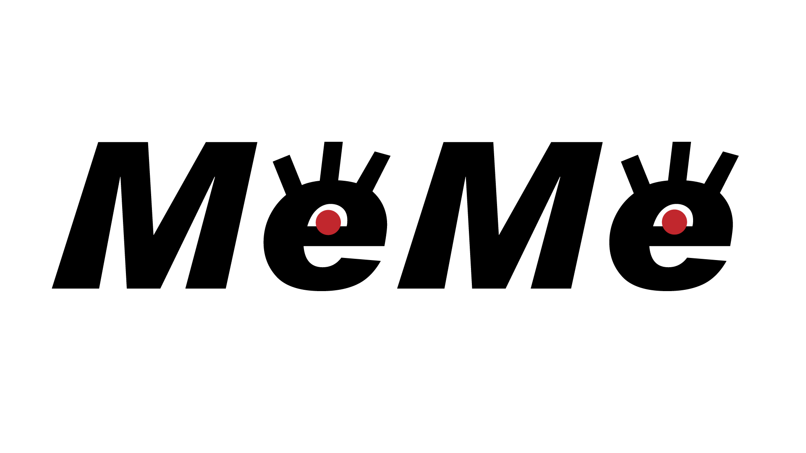
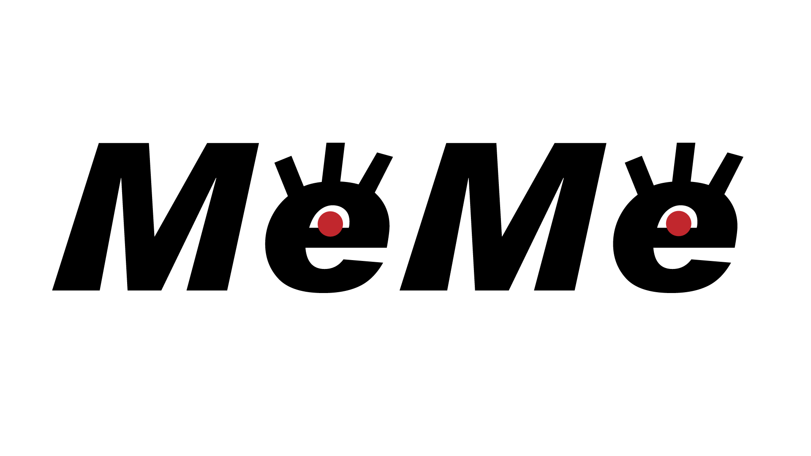

MeMeはネコの視覚の再現デバイスである。2色型色覚である動物の中でも人と同じ視界を見ていると思われるネコの視覚に焦点を当てた。ネコは2色型の視覚に加えて、網膜で明度を増幅させることで夜目が効くとされている。しかし実際にネコがどの様な視覚でものを見ているのかを人間が知る余地はない。そこでネコの視覚を完全に再現するということでは無いがネコの視覚の特性として挙げられている2原色型の色覚と明度を増幅するという2点に 絞った再現装置の制作を行った。色と明度の設定については、減色・明度変更による視覚変化の可能性を探るため各項目を自由に設定できるものにした。
私たち人間は赤・緑・青の３種類の錐体をもつ３色型色覚である。対して、ネコやトラなどネコ科の動物は緑と青の２種類の色覚受容体しかもたない２色型色覚である。この２色型の色覚では特定の物が見やすくなる、脳で処理する色の情報量が減ることによる動体視力の向上といったいくつかの興味深い効果があるとされている。そこでAグループでは色覚に焦点を当てて調査を行った。